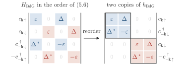
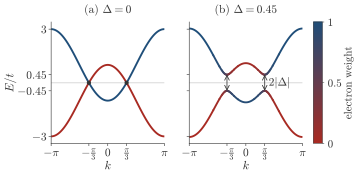
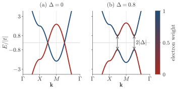

Page 5 of 16 of this session
5.8 The Nambu spinor and the Bogoliubov-de Gennes Hamiltonian
How do we diagonalize a Hamiltonian that mixes creation and annihilation operators, such as the mean-field Hamiltonian of a superconductor? We will now see that a larger spinor, which holds electrons and holes, turns it into an ordinary matrix, the Bogoliubov-de Gennes Hamiltonian. For one band with two spins it splits into two identical \(2\times2\) blocks, and its spectrum has a gap \(2|\Delta|\) at the Fermi level.
\[H_{\text{MF}} = -t\sum_{n\sigma}\left(c_{n\sigma}^\dagger c_{n+1,\sigma}+\text{h.c.}\right) - \mu\sum_{n\sigma}c_{n\sigma}^\dagger c_{n\sigma} + \sum_n\left(\Delta_n\, c_{n\uparrow}^\dagger c_{n\downarrow}^\dagger + \Delta_n^*\, c_{n\downarrow}c_{n\uparrow}\right) - \sum_n\frac{|\Delta_n|^2}{U}. \tag{5.4}\]
This is the mean-field Hamiltonian of Section 5.5 for a chain, with the hopping \(t\), the chemical potential \(\mu\) and the pair amplitude \(\Delta_n\) of each site \(n\). The pairing terms have two creation or two annihilation operators, and the last term is a constant.
The pairing term creates a technical problem. We cannot diagonalize (5.4) with an ordinary vector of orbital operators, because the anomalous term mixes creation and annihilation operators. Every Hamiltonian that we diagonalized from Session 1 to Session 4 paired them up instead. The solution is to enlarge the operator basis, so that both the creation and the annihilation operators of the original problem become entries of a bigger spinor that behave like annihilation operators. We work in momentum space, with a single orbital and both spins, and we define the Nambu spinor
\[\Psi_{\mathbf{k}} = \begin{pmatrix} c_{\mathbf{k}\uparrow} \\ c_{\mathbf{k}\downarrow} \\ c_{-\mathbf{k}\downarrow}^\dagger \\ -c_{-\mathbf{k}\uparrow}^\dagger \end{pmatrix}, \tag{5.6}\]
which has an electron sector and a hole sector. The electron sector is formed by the first two components, which are ordinary annihilation operators. The hole sector is formed by the last two components, which are creation operators at \(-\mathbf{k}\), with the spins exchanged and with an extra minus sign on the last entry. This sign has a real role. With it, when we write \(H_{\text{MF}}\) in terms of \(\Psi_{\mathbf k}\), the pairing term gives two identical and decoupled copies of the same \(2\times 2\) problem. Without it, the two blocks would still be decoupled, but with \(+\Delta\) in one and \(-\Delta\) in the other, so they would not be identical copies.
Let us take a spin-singlet pairing \(\Delta(\mathbf k)\) that does not depend on momentum, which is equal to \(\Delta\) for the Fourier transform of the onsite case of (5.4). Using the fermionic anticommutation relations to reorder operators where needed, one can check directly that the mean-field Hamiltonian can be written exactly as
\[H_{\text{MF}} = \frac{1}{2}\sum_{\mathbf{k}} \Psi_{\mathbf{k}}^\dagger\, H_{\text{BdG}}(\mathbf{k})\, \Psi_{\mathbf{k}} + \text{const.}, \qquad H_{\text{BdG}}(\mathbf{k}) = \begin{pmatrix} \varepsilon(\mathbf{k}) & 0 & \Delta(\mathbf k) & 0 \\ 0 & \varepsilon(\mathbf k) & 0 & \Delta(\mathbf k) \\ \Delta(\mathbf k)^* & 0 & -\varepsilon(\mathbf{k}) & 0 \\ 0 & \Delta(\mathbf k)^* & 0 & -\varepsilon(\mathbf k) \end{pmatrix}, \tag{5.7}\]
where \(\varepsilon(\mathbf k) = -2t(\cos k_x + \cos k_y) - \mu\) is the ordinary band dispersion, which we assume to be inversion symmetric, \(\varepsilon(-\mathbf k) = \varepsilon(\mathbf k)\). This \(4\times 4\) matrix is called the Bogoliubov-de Gennes (BdG) Hamiltonian, and in a concrete sense it is the most important object to describe the excitations of a superconductor. Note that the two diagonal entries in the lower-right part have \(-\varepsilon(\mathbf k)\) and not \(+\varepsilon(\mathbf k)\). This comes directly from writing \(c_{-\mathbf k\sigma}^\dagger c_{-\mathbf k\sigma}\) in terms of \(c_{-\mathbf k\sigma}c_{-\mathbf k\sigma}^\dagger = 1 - c_{-\mathbf k\sigma}^\dagger c_{-\mathbf k\sigma}\) with the anticommutation relations. This is also where the name hole comes from, since a missing electron at \(-\mathbf k\) behaves like a particle with opposite energy.
The \(4\times 4\) problem in (5.7) splits into two \(2\times 2\) blocks, and it would split also without the extra minus sign of the spinor (5.6). There is one block built from \((c_{\mathbf k\uparrow}, c_{-\mathbf k\downarrow}^\dagger)\) and one built from \((c_{\mathbf k\downarrow}, -c_{-\mathbf k\uparrow}^\dagger)\), and the minus sign is what makes the second one identical to the first.
Each of the two blocks is the reduced BdG matrix
\[h_{\text{BdG}}(\mathbf k) = \begin{pmatrix} \varepsilon(\mathbf k) & \Delta(\mathbf k) \\ \Delta(\mathbf k)^* & -\varepsilon(\mathbf k)\end{pmatrix}. \tag{5.8}\]
The first entry is the energy \(\varepsilon(\mathbf k)\) of an electron at \(\mathbf k\). The second one is the energy \(-\varepsilon(\mathbf k)\) of a hole, which is a missing electron of the opposite spin at \(-\mathbf k\), and the pair amplitude \(\Delta(\mathbf k)\) couples the two.

So the BdG Hamiltonian of a single orbital with two spins is a \(4\times 4\) matrix, with diagonal entries \(\varepsilon(\mathbf k)\), \(\varepsilon(\mathbf k)\), \(-\varepsilon(\mathbf k)\), \(-\varepsilon(\mathbf k)\) and off-diagonal entries \(\Delta\). If we diagonalize (5.8), we obtain the standard BCS quasiparticle dispersion.
The eigenvalues of (5.8) are the quasiparticle energies
\[E(\mathbf k) = \pm\sqrt{\varepsilon(\mathbf k)^2 + |\Delta(\mathbf k)|^2}. \tag{5.9}\]
For a uniform \(\Delta\) and a band that crosses the Fermi level, the smallest \(|E|\) is \(|\Delta|\), at the momenta where \(\varepsilon(\mathbf k)=0\), so the two branches are \(2|\Delta|\) apart there.
The steps From the mean-field Hamiltonian (5.4) to the BdG matrix (5.7) and the spectrum (5.9)
We take one band with both spins and a uniform \(\Delta\), and we leave out the constant \(-\sum_n|\Delta_n|^2/U\) of (5.4), which is a number. The first step is the Fourier transform, \(c_n=\frac{1}{\sqrt N}\sum_{\mathbf k}e^{i\mathbf k\cdot\mathbf r_n}c_{\mathbf k}\) on \(N\) sites. The hopping and the chemical potential give \(\sum_{\mathbf k\sigma}\varepsilon(\mathbf k)\,c^\dagger_{\mathbf k\sigma}c_{\mathbf k\sigma}\), and the onsite pairing gives
\[\sum_n c^\dagger_{n\uparrow}c^\dagger_{n\downarrow}=\sum_{\mathbf k}c^\dagger_{\mathbf k\uparrow}c^\dagger_{-\mathbf k\downarrow},\]
since the sum over \(n\) of \(e^{-i(\mathbf k+\mathbf k')\cdot\mathbf r_n}\) keeps only \(\mathbf k'=-\mathbf k\). The opposite sign in the exponent gives the same result, so this step does not depend on the convention of the transform.
The second step is one block, which is the simplest case. We collect the terms of \(c_{\mathbf k\uparrow}\) and of \(c^\dagger_{-\mathbf k\downarrow}\). The energy of spin down at \(-\mathbf k\) is written with \(c^\dagger c=1-cc^\dagger\), and with \(\varepsilon(-\mathbf k)=\varepsilon(\mathbf k)\) it becomes
\[\varepsilon(\mathbf k)\,c^\dagger_{-\mathbf k\downarrow}c_{-\mathbf k\downarrow}=-\varepsilon(\mathbf k)\,c_{-\mathbf k\downarrow}c^\dagger_{-\mathbf k\downarrow}+\varepsilon(\mathbf k).\]
This is where the \(-\varepsilon\) of the hole comes from, together with a constant. All the terms of \(H_{\text{MF}}\) then fit in one \(2\times2\) matrix,
\[H_{\text{MF}}=\sum_{\mathbf k}\begin{pmatrix}c^\dagger_{\mathbf k\uparrow}& c_{-\mathbf k\downarrow}\end{pmatrix}\begin{pmatrix}\varepsilon(\mathbf k)&\Delta\\ \Delta^*&-\varepsilon(\mathbf k)\end{pmatrix}\begin{pmatrix}c_{\mathbf k\uparrow}\\ c^\dagger_{-\mathbf k\downarrow}\end{pmatrix}+\sum_{\mathbf k}\varepsilon(\mathbf k),\]
which is (5.8). Multiplying out the matrix gives back the energy of the two spins and the pairing \(\Delta\, c^\dagger_{\mathbf k\uparrow}c^\dagger_{-\mathbf k\downarrow}+\Delta^*c_{-\mathbf k\downarrow}c_{\mathbf k\uparrow}\).
The third step is the factor \(\frac12\). The second block, with \((c_{\mathbf k\downarrow},-c^\dagger_{-\mathbf k\uparrow})\), gives the same terms again after the relabeling \(\mathbf k\to-\mathbf k\). For the pairing this uses \(-\Delta\, c^\dagger_{\mathbf k\downarrow}c^\dagger_{-\mathbf k\uparrow}=\Delta\, c^\dagger_{-\mathbf k\uparrow}c^\dagger_{\mathbf k\downarrow}\), where the minus sign of the spinor cancels the minus sign of the exchange. The full spinor (5.6) holds both blocks, so it counts every term twice, and this is the factor \(\frac12\) of (5.7). Its constant is \(\sum_{\mathbf k}\varepsilon(\mathbf k)\), plus the \(-\sum_n|\Delta_n|^2/U\) that we left out.
The last step is the spectrum. The eigenvalues of (5.8) solve
\[\det\begin{pmatrix}\varepsilon-E&\Delta\\ \Delta^*&-\varepsilon-E\end{pmatrix}=E^2-\varepsilon^2-|\Delta|^2=0,\]
which is (5.9). As a number, \(\varepsilon=0.3\) and \(\Delta=0.4\) give \(E=\pm0.5\).

g2_nambu_chain.py
The same happens on the square lattice of the notebook, in Schematic 5.7. The Fermi surface is a closed curve there, and the path through the Brillouin zone crosses it twice, with the same gap \(2|\Delta|\) at both crossings.

g2_nambu_square.py
h.set_filling(0.2, nk=20) of the cell puts the Fermi level at \(\mu=-1.90\), where about a fraction \(0.2\) of the electron states is filled. With the default nk=10 the same call gives \(\mu=-2.24\). The filled states form a pocket around \(M\). (a) Without pairing the electron band and the hole band cross on the Fermi surface, once between \(X\) and \(M\) and once between \(M\) and \(\Gamma\). (b) With h.add_swave(0.8) the two bands anticross at both crossings, where the smallest energy is \(|\Delta|=0.8\). Look at the two crossings, since the gap \(2|\Delta|=1.6\) is the same at both.In (5.9) the quasiparticle energy is \(E=\pm\sqrt{\varepsilon^2+|\Delta|^2}\). Where is \(|E|\) smallest, and how large is it?
\[E(\mathbf k) = \pm\sqrt{\varepsilon(\mathbf k)^2 + |\Delta(\mathbf k)|^2}. \tag{5.9}\]
Show the answers
- A. ✗ False
This is false. Take \(t=1\), \(\mu=0\) and \(\Delta=0.2\). At the band bottom \(\varepsilon=-4\), so \(E=\sqrt{16+0.04}\approx4.0\), which is the largest value of \(|E|\) and not the smallest.
- B. ✓ True
This is true. Since \(E^2=\varepsilon^2+|\Delta|^2\) in (5.9), the smallest \(|E|\) is at \(\varepsilon=0\), and there \(|E|=|\Delta|\).
- C. ✗ False
This is false. For \(\Delta=0.2\) at \(\varepsilon=0\) we get \(E=\pm0.2\) and not \(\pm0.4\). The value \(2|\Delta|=0.4\) is the full gap between the two branches, and not the smallest \(|E|\).
One block of the BdG Hamiltonian is the matrix
\[h_{\text{BdG}}=\begin{pmatrix}\varepsilon&\Delta\\ \Delta^*&-\varepsilon\end{pmatrix}.\]
What are its two eigenvalues?
Show the answers
- A. ✗ False
This is false. The trace of \(h_{\text{BdG}}\) is \(0\), so the two eigenvalues add up to zero. For \(\varepsilon=0.3\) and \(\Delta=0.4\) this option gives \(0.7\) and \(-0.1\), which add up to \(0.6\).
- B. ✓ True
This is true. The trace is \(0\) and the determinant is \(-\varepsilon^2-|\Delta|^2\), so \(E^2=\varepsilon^2+|\Delta|^2\). For \(\varepsilon=0.3\) and \(\Delta=0.4\) this gives \(E=\pm0.5\).
- C. ✗ False
This is false. The product of the two eigenvalues is the determinant, \(-\varepsilon^2-|\Delta|^2\). For \(\varepsilon=0.3\) and \(\Delta=0.4\) it is \(-0.25\), while this option gives \(-0.49\).
Each picture shows the BdG bands of a square lattice with a uniform pairing \(\Delta\). The color is the electron weight, blue for an electron and red for a hole. The quasiparticle energy is
\[E=\pm\sqrt{\varepsilon^2+|\Delta|^2}.\]
Which lattice has \(|\Delta|=0.8\)?
Show the answers
- A. ✗ False
This is false. Here the two branches come closest at \(E=\pm0.4\), so they are \(0.8\) apart. This \(0.8\) is the gap \(2|\Delta|\), and the pairing is \(|\Delta|=0.4\).
- B. ✓ True
This is true. The smallest \(|E|\) is \(0.8\), at the two crossings of the electron and the hole band, where \(\varepsilon=0\). So \(|\Delta|=0.8\), and the two branches are \(1.6\) apart.
- C. ✗ False
This is false. Here the branches come closest at \(E=\pm0.2\), so \(|\Delta|=0.2\), and the gap between the branches is \(0.4\), half of \(0.8\).
The three pictures are the notebook cell of the square lattice with h.add_swave(0.4), 0.8 and 0.2.
The upper eigenvector of the block (5.8) is \((u,v)\), with the energy \(E=\sqrt{\varepsilon^2+|\Delta|^2}\). Show that its electron weight is \(|u|^2=\frac12(1+\varepsilon/E)\), and evaluate it at \(\varepsilon=|\Delta|\).
Solution
The first row of \(h_{\text{BdG}}(u,v)^T=E\,(u,v)^T\) gives \(\varepsilon u+\Delta v=Eu\), so \(v=(E-\varepsilon)\,u/\Delta\) and \(|v|^2=(E-\varepsilon)^2|u|^2/|\Delta|^2\). With \(|\Delta|^2=E^2-\varepsilon^2=(E-\varepsilon)(E+\varepsilon)\) this is
\[|v|^2=\frac{E-\varepsilon}{E+\varepsilon}\,|u|^2 .\]
The normalization \(|u|^2+|v|^2=1\) then gives
\[|u|^2=\frac{E+\varepsilon}{2E}=\frac12\Big(1+\frac{\varepsilon}{E}\Big), \qquad |v|^2=\frac12\Big(1-\frac{\varepsilon}{E}\Big).\]
At \(\varepsilon=|\Delta|\) we have \(E=\sqrt2\,|\Delta|\), so \(|u|^2=\frac12(1+1/\sqrt2)=0.854\) and \(|v|^2=0.146\). Far above the Fermi level \(|u|^2\) goes to \(1\), at the Fermi level it is \(\frac12\), and far below it goes to \(0\), which is the color of the bands in Schematic 5.6.
The lower branch at \(-E\) has the eigenvector \((-v^*,u^*)\), so its electron weight is \(|v|^2\). ARPES removes electrons, so it sees the lower branch, and at this momentum it sees it with the weight \(0.146\), even though the band \(\varepsilon=|\Delta|\) lies above the Fermi level. This weak copy below the Fermi level is a direct signature of the mixing of electrons and holes.
Notebook check-in: session5.ipynb, “Nambu electronic structure without superconductivity” and “Nambu electronic structure with superconductivity” (both Reminder)
First build the Nambu-doubled Hamiltonian of (5.6) and (5.7) with \(\Delta = 0\), and check that you get two copies of the band structure. One is the physical copy, which is the electron sector, and the other is a spurious mirror copy, which is the hole sector, with dispersion \(-\varepsilon(\mathbf k)\). Then turn on \(\Delta\) and look at how the gap in (5.9) opens at every crossing between the two copies.
Try it. In the cell, change h.add_swave(0.8) to 0.4 and then to 0.2. The electron and hole bands anticross at the Fermi points. The smallest energy is \(|\Delta|\), so the gap between the two branches is \(2|\Delta|\), as in (5.9).
- In Section 6.15 the magnons of an antiferromagnet need a Bogoliubov transformation too, since the Néel state gives anomalous terms \(a_ib_j\), and this gives their linear dispersion (6.9).
- In Section 8.6 the Nambu space is the basis in which a BCS-type state of spinons is written, as the first guess for a quantum spin liquid.
- In Section 9.7 a magnetic impurity added to the BdG Hamiltonian gives a bound state inside the gap, with the energy (9.10), which shows up in the density of states.